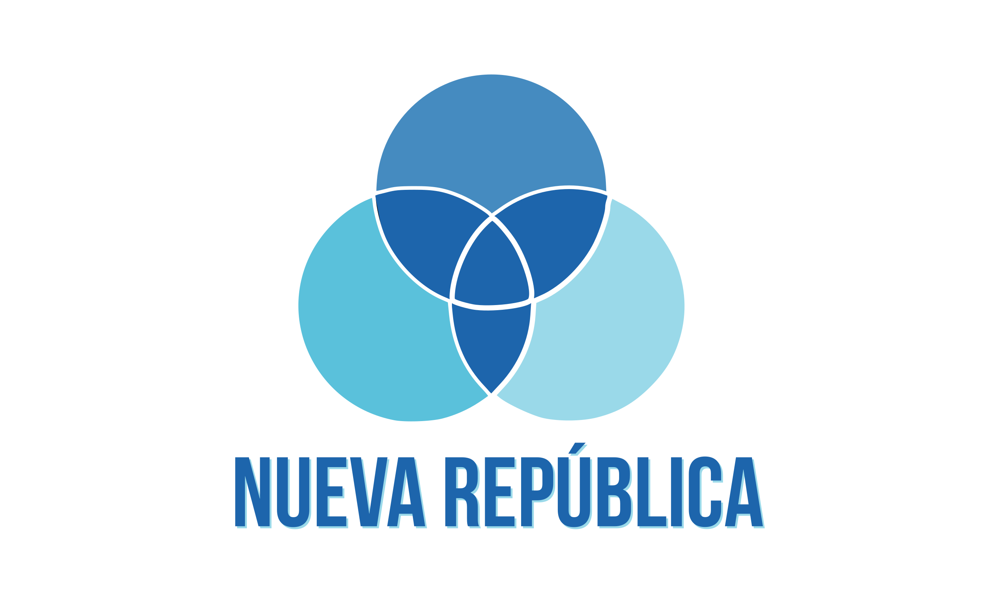
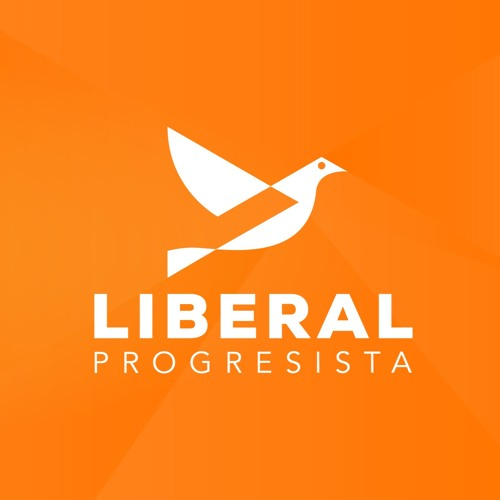

Resultados de Encuestas
| Bandera | Candidato | Primera | Segunda |
|---|---|---|---|

|
José María Figueres |
17% |
17.01% |
|  | Fabricio Alvarado |
9% |
10.27% |

|
Rodrigo Chaves |
5% |
8.19% |
|  | Eli Feinzaig |
4% |
5.68% |